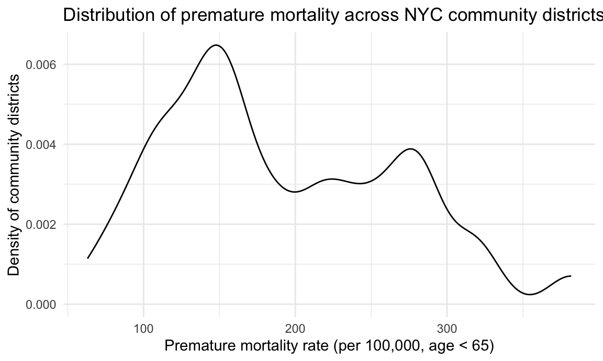
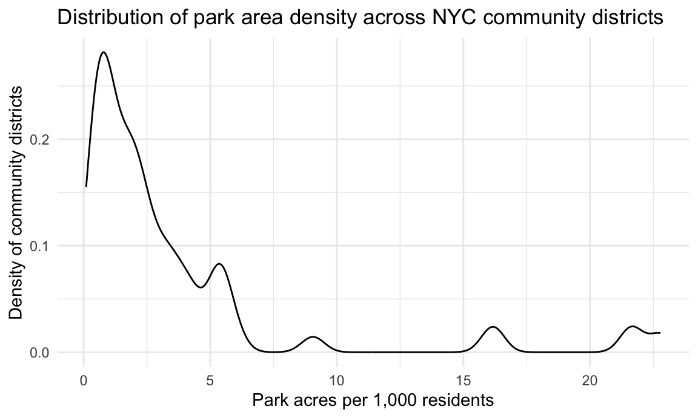
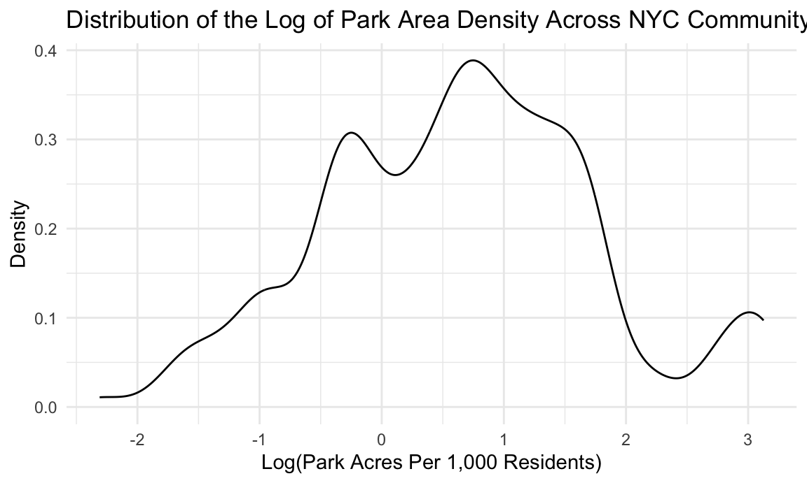

Data Cleaning and Exploratory Analysis
We began by constructing an analytic dataset that links community
districts to their corresponding park acreage and demographic
characteristics. Because each district may contain multiple parks, we
aggregated total park acreage and the number of parks within each
district and standardized these values by population size to obtain park
acres per 1,000 residents. We then restricted the dataset to
observations with complete information on both park exposure and
premature mortality.
full_df <- read_csv("data/full_df.csv")
analysis_df <-
full_df |>
select(id, acres, unique_id, borough, neighbourhood, overall_pop, race_black, poverty,
premature_mort_rate) |>
group_by(id) |>
mutate(
total_park_acres = sum(acres, na.rm = TRUE),
n_parks = n(),
park_acres_per_1000 = total_park_acres / (overall_pop / 1000)
) |>
ungroup() |>
drop_na(park_acres_per_1000, premature_mort_rate)
To gain an initial understanding of the data, we summarized
distributions of the key exposure, outcome, and sociodemographic
variables. These summaries help contextualize the variation across
districts and provide a baseline expectation for subsequent visual and
statistical analyses.
analysis_df |>
summarize(
n_cd = n(),
mean_park_acres_per_1000 = mean(park_acres_per_1000, na.rm = TRUE),
sd_park_acres_per_1000 = sd(park_acres_per_1000, na.rm = TRUE),
mean_premort_rate = mean(premature_mort_rate, na.rm = TRUE),
sd_premort_rate = sd(premature_mort_rate, na.rm = TRUE),
mean_poverty = mean(poverty, na.rm = TRUE),
mean_race_black = mean(race_black, na.rm = TRUE)
) |>
kable(digits = 3)
| 2141 |
3.563 |
4.98 |
191.097 |
76.488 |
19.996 |
24.272 |
We then visualized the marginal distributions of premature mortality
and park density. These plots allowed us to assess skewness, detect
possible outliers, and evaluate whether transformations or modeling
adjustments might be necessary.
# Premature mortality
analysis_df |>
ggplot(aes(x = premature_mort_rate)) +
geom_density() +
labs(
x = "Premature mortality rate (per 100,000, age < 65)",
y = "Density of community districts",
title = "Distribution of premature mortality across NYC community districts"
)

# Park density
analysis_df |>
ggplot(aes(x = park_acres_per_1000)) +
geom_density() +
labs(
x = "Park acres per 1,000 residents",
y = "Density of community districts",
title = "Distribution of park area density across NYC community districts"
)

Park acreage per capita was highly right-skewed, with many districts
possessing very limited parkland relative to their population size.
Because log-transformations can help linearize relationships and
stabilize variance, we also examined the distribution of the
log-transformed exposure.
# Log of park density
analysis_df |>
ggplot(aes(x = log(park_acres_per_1000))) +
geom_density() +
labs(
x = "Log(Park Acres Per 1,000 Residents)",
y = "Density",
title = "Distribution of the Log of Park Area Density Across NYC Community Districts"
)

To explore the relationship between park access and premature
mortality, we created a scatterplot of premature mortality versus park
acres per 1,000 residents. We added a simple linear regression line to
obtain an initial visual sense of direction and shape.
analysis_df |>
mutate(
label = paste0(
neighbourhood, "<br>",
"Park acres per 1,000: ", round(park_acres_per_1000, 2), "<br>",
"Premature mortality: ", round(premature_mort_rate, 1)),
fit = fitted(lm(premature_mort_rate ~ park_acres_per_1000, data = analysis_df))
) |>
plot_ly(
x = ~park_acres_per_1000,
y = ~premature_mort_rate,
color = ~borough,
text = ~label,
type = "scatter",
mode = "markers"
) |>
add_lines(
x = ~park_acres_per_1000,
y = ~fit,
name = "Regression Line",
inherit = FALSE,
line = list(color = "black", width = 2),
showlegend = FALSE
) |>
layout(
title = "Park area density and premature mortality across NYC community districts",
xaxis = list(title = "Park acres per 1,000 residents"),
yaxis = list(title = "Premature mortality rate (per 100,000, age < 65)")
)
Modeling Strategy
Our modeling strategy proceeded in stages. We first examined the
crude (unadjusted) association between park acreage and premature
mortality, then sequentially adjusted for borough and key
sociodemographic covariates. We treated the model including park
density, poverty, percent Black residents, and borough fixed effects as
our primary main-effects specification. Finally, we
conducted two sensitivity analyses: one using a log-transformed park
exposure, and another including an interaction between park density and
poverty to assess potential effect modification.
Simple Linear Regression Model (Crude)
We began with a simple linear regression model including only park
acres per 1,000 residents as a predictor of premature mortality. This
crude model provides an unadjusted estimate of the association between
park access and premature mortality and serves as a baseline for
comparison as we introduce additional covariates.
crude_model <- lm(premature_mort_rate ~ park_acres_per_1000, data = analysis_df)
kable(tidy(crude_model), digits = 3)
| (Intercept) |
191.214 |
2.033 |
94.047 |
0.000 |
| park_acres_per_1000 |
-0.033 |
0.332 |
-0.099 |
0.921 |
kable(glance(crude_model), digits = 3)
| 0 |
0 |
76.506 |
0.01 |
0.921 |
1 |
-12323.25 |
24652.51 |
24669.51 |
12519921 |
2139 |
2141 |
Multiple Linear Regression Model (Borough Adjusted)
Our exploratory work showed clear differences in both park access and
demographic composition across NYC boroughs. To account for these
systematic geographic differences, we extended our model to include
borough fixed effects. This borough-adjusted model allows us to examine
the association between park density and mortality within boroughs,
reducing confounding from large-scale structural and environmental
differences.
borough_model <- lm(premature_mort_rate ~ park_acres_per_1000 + borough, data = analysis_df)
kable(tidy(borough_model), digits = 3)
| (Intercept) |
249.163 |
3.333 |
74.746 |
0 |
| park_acres_per_1000 |
2.168 |
0.401 |
5.407 |
0 |
| boroughBrooklyn |
-48.221 |
4.118 |
-11.709 |
0 |
| boroughManhattan |
-88.302 |
4.570 |
-19.322 |
0 |
| boroughQueens |
-116.044 |
4.442 |
-26.123 |
0 |
| boroughStaten Island |
-93.559 |
7.920 |
-11.814 |
0 |
kable(glance(borough_model), digits = 3)
| 0.266 |
0.265 |
65.586 |
155.117 |
0 |
5 |
-11991.52 |
23997.05 |
24036.73 |
9183767 |
2135 |
2141 |
Comparing AIC and BIC across the slr and borough-adjusted models
suggests that including borough substantially improves model fit.
model_metrics_1 = tibble(
Model = c("crude_model", "borough_model"),
AIC = c(AIC(crude_model), AIC(borough_model)),
BIC = c(BIC(crude_model), BIC(borough_model))
)
kable(model_metrics_1, digits = 3)
| crude_model |
24652.51 |
24669.51 |
| borough_model |
23997.05 |
24036.73 |
Primary Main-Effects Model (Park, Poverty, Race, Borough)
Guided by our exploratory analysis and prior literature, we then
incorporated key sociodemographic covariates, poverty and the percent of
Black residents, along with borough fixed effects. This main-effects
model is our primary specification, designed to capture
the association between park density and premature mortality while
adjusting for major neighborhood-level determinants of health.
The main-effects model therefore includes:
Primary exposure: park acres per 1,000 residents
Key confounders: poverty, percent Black Spatial
controls: borough fixed effects
primary_model <- lm(premature_mort_rate ~ park_acres_per_1000 + poverty + race_black + borough,
data = analysis_df)
kable(tidy(primary_model, conf.int = TRUE), digits = 3)
| (Intercept) |
15.281 |
4.211 |
3.629 |
0.000 |
7.023 |
23.540 |
| park_acres_per_1000 |
3.683 |
0.201 |
18.369 |
0.000 |
3.290 |
4.077 |
| poverty |
6.346 |
0.138 |
46.049 |
0.000 |
6.076 |
6.616 |
| race_black |
1.792 |
0.034 |
52.004 |
0.000 |
1.725 |
1.860 |
| boroughBrooklyn |
-6.058 |
2.400 |
-2.525 |
0.012 |
-10.764 |
-1.352 |
| boroughManhattan |
5.058 |
2.771 |
1.825 |
0.068 |
-0.376 |
10.493 |
| boroughQueens |
-30.787 |
2.639 |
-11.666 |
0.000 |
-35.963 |
-25.612 |
| boroughStaten Island |
4.184 |
4.128 |
1.014 |
0.311 |
-3.912 |
12.280 |
kable(glance(primary_model), digits = 3)
| 0.823 |
0.822 |
32.236 |
1416.432 |
0 |
7 |
-10469.83 |
20957.65 |
21008.67 |
2216556 |
2133 |
2141 |
kable(vif(primary_model), digits = 3)
| park_acres_per_1000 |
2.054 |
1 |
1.433 |
| poverty |
1.942 |
1 |
1.394 |
| race_black |
1.236 |
1 |
1.112 |
| borough |
3.640 |
4 |
1.175 |
We assessed standard regression diagnostics for the primary
main-effects model to evaluate linearity, homoscedasticity, normality of
residuals, and the influence of individual community districts.
par(mfrow = c(2, 2))
plot(primary_model)

par(mfrow = c(1, 1))
The diagnostic plots suggested mild heteroscedasticity and a few
moderately influential observations, which is expected in
neighborhood-level data, but no evidence of a single district dominating
the fit. Overall, the assumptions of linear regression appeared
reasonably well-satisfied for our main-effects model.
Effect Modification: Interaction Between Park Density and
Poverty
To explore whether the association between park density and premature
mortality varies by neighborhood socioeconomic context, we fit a model
including an interaction between park acres per 1,000 residents and the
poverty rate. This model allows the slope for park density to differ
across levels of poverty, capturing potential effect modification.
interaction_model <- lm(premature_mort_rate ~ park_acres_per_1000 * poverty + race_black + borough,
data = analysis_df)
kable(tidy(interaction_model, conf.int = TRUE), digits = 3)
| (Intercept) |
39.934 |
4.218 |
9.468 |
0.000 |
31.662 |
48.206 |
| park_acres_per_1000 |
-6.083 |
0.609 |
-9.988 |
0.000 |
-7.277 |
-4.888 |
| poverty |
4.932 |
0.154 |
31.978 |
0.000 |
4.630 |
5.235 |
| race_black |
1.769 |
0.032 |
54.593 |
0.000 |
1.706 |
1.833 |
| boroughBrooklyn |
-7.916 |
2.257 |
-3.507 |
0.000 |
-12.342 |
-3.489 |
| boroughManhattan |
-2.352 |
2.640 |
-0.891 |
0.373 |
-7.530 |
2.826 |
| boroughQueens |
-37.315 |
2.510 |
-14.869 |
0.000 |
-42.236 |
-32.393 |
| boroughStaten Island |
16.914 |
3.952 |
4.280 |
0.000 |
9.165 |
24.663 |
| park_acres_per_1000:poverty |
0.673 |
0.040 |
16.863 |
0.000 |
0.595 |
0.752 |
kable(glance(interaction_model), digits = 3)
| 0.844 |
0.843 |
30.287 |
1439.564 |
0 |
8 |
-10335.8 |
20691.6 |
20748.29 |
1955715 |
2132 |
2141 |
par(mfrow = c(2,2))
plot(interaction_model)

par(mfrow = c(1,1))
kable(vif(interaction_model), digits = 3)
| park_acres_per_1000 |
21.462 |
1 |
4.633 |
| poverty |
2.756 |
1 |
1.660 |
| race_black |
1.238 |
1 |
1.113 |
| borough |
4.194 |
4 |
1.196 |
| park_acres_per_1000:poverty |
16.968 |
1 |
4.119 |
The interaction term between park density and poverty was large and
highly significant, indicating that the association between park acreage
and premature mortality differs across poverty levels. However, although
this model modestly improved overall fit, it also introduced higher
multicollinearity and greater complexity. We therefore treat the
interaction model as a complementary effect-modification analysis rather
than our primary specification.
Model Comparison Summary
To compare competing specifications on a common scale, we summarized
AIC, BIC, and adjusted R² across all models. The primary main-effects
model (park density, poverty, percent Black, and borough) achieved a
strong balance of goodness-of-fit and parsimony, while the interaction
model further improved fit at the cost of increased complexity and
collinearity.
total_model_metrics <- tibble(
Model = c(
"Crude (Park Density Only)",
"Borough-adjusted",
"Main Effects (Primary)",
"Main Effects + Interaction",
"Log Exposure Main Effects"),
AIC = c(
AIC(crude_model),
AIC(borough_model),
AIC(primary_model),
AIC(interaction_model),
AIC(log_model)),
BIC = c(
BIC(crude_model),
BIC(borough_model),
BIC(primary_model),
BIC(interaction_model),
BIC(log_model)),
adj_R2 = c(
glance(crude_model)$adj.r.squared,
glance(borough_model)$adj.r.squared,
glance(primary_model)$adj.r.squared,
glance(interaction_model)$adj.r.squared,
glance(log_model)$adj.r.squared)
)
kable(total_model_metrics, digits = 3)
| Crude (Park Density Only) |
24652.51 |
24669.51 |
0.000 |
| Borough-adjusted |
23997.05 |
24036.73 |
0.265 |
| Main Effects (Primary) |
20957.65 |
21008.67 |
0.822 |
| Main Effects + Interaction |
20691.60 |
20748.29 |
0.843 |
| Log Exposure Main Effects |
21039.51 |
21090.54 |
0.815 |
The main-effects model offered the best balance between fit and
interpretability (AIC ≈ 20,958; adj. R² = 0.822). Although the
interaction model improved fit slightly (adj. R² = 0.843), it introduced
high multicollinearity and added complexity, and therefore serves as a
secondary effect-modification analysis rather than the primary
specification. The log-transformed exposure model performed slightly
worse than the main-effects model, indicating that the key findings are
robust to transformation but that the original exposure scale is
adequate.
Overall Interpretation
Our analysis highlights substantial variation in premature mortality
across New York City community districts and demonstrates the central
role of socioeconomic and racial inequities in shaping these
disparities. While park acreage per capita is often treated as a
beneficial environmental resource, our findings indicate that simple
measures of green space quantity do not uniformly translate into
improved health outcomes across neighborhoods.
In unadjusted analyses, park density showed no association with
premature mortality. However, once we accounted for broad geographic
context using borough fixed effects, the association became positive;
districts with more park acreage per capita had higher premature
mortality rates. This pattern persisted and grew stronger in the fully
adjusted main-effects model, even after controlling for poverty and
racial composition. These results suggest that the distribution of park
acreage across NYC is closely intertwined with underlying structural
conditions, and that acreage alone is not a sufficient indicator of
health-promoting green space.
Poverty and the percent of Black residents emerged as the strongest
predictors of premature mortality, consistent with longstanding research
on structural racism, economic disinvestment, and environmental
inequity. These covariates explained a substantial portion of the
variability in health outcomes, and their strong associations underscore
the continued influence of neighborhood socioeconomic conditions on
early mortality risk.
The sensitivity analysis using log-transformed park density produced
nearly identical conclusions and slightly worse model fit, reinforcing
the robustness of the primary findings. Importantly, our
effect-modification analysis revealed that the association between park
acreage and premature mortality differs markedly across poverty levels.
In low-poverty districts, higher park acreage was associated with lower
premature mortality, while in high-poverty districts the association
reversed direction and became strongly positive. This interaction
suggests that the potential health benefits of green space may be
contingent on neighborhood conditions such as park quality, safety,
accessibility, or adjacent environmental burdens—factors that are not
captured by acreage-based metrics.
Although the interaction model significantly improved explanatory
power, it also introduced higher multicollinearity and added complexity.
For these reasons, we treat the interaction results as complementary
rather than as our primary specification. Nonetheless, the presence of
strong effect modification highlights an equity-relevant insight: green
space benefits are not evenly distributed, and green space may even
cluster alongside environmental or socioeconomic stressors in more
disadvantaged neighborhoods.
Taken together, our results suggest that increasing park acreage
alone is unlikely to reduce premature mortality without concurrent
investments in neighborhood socioeconomic conditions, racial equity, and
the quality and accessibility of parks themselves. Future research
should incorporate richer measures of park quality, safety, programming,
and walkable access, as well as additional built-environment factors
such as heat exposure, air quality, and housing conditions. Such work
may help inform urban planning strategies that more effectively align
green space investments with health equity goals.